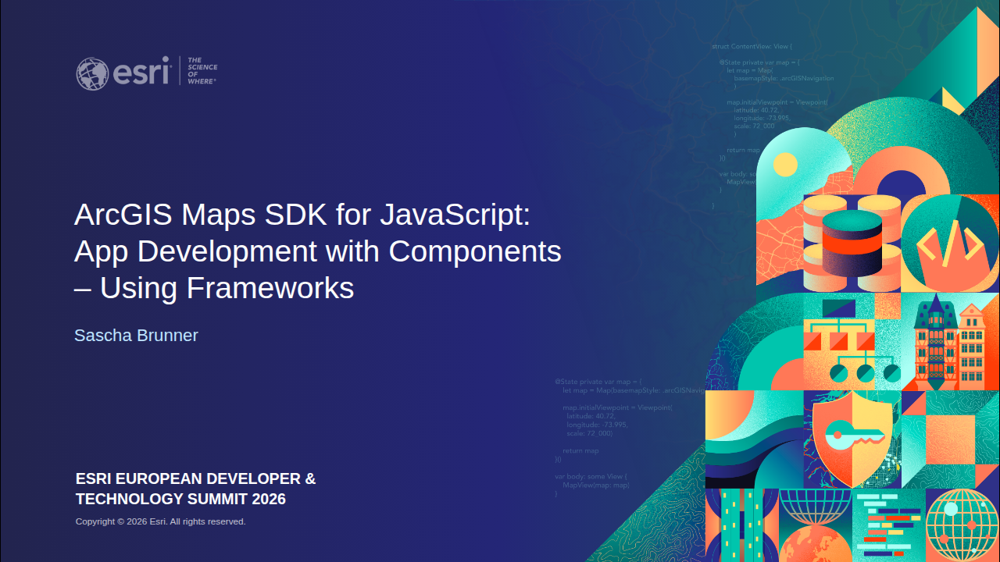
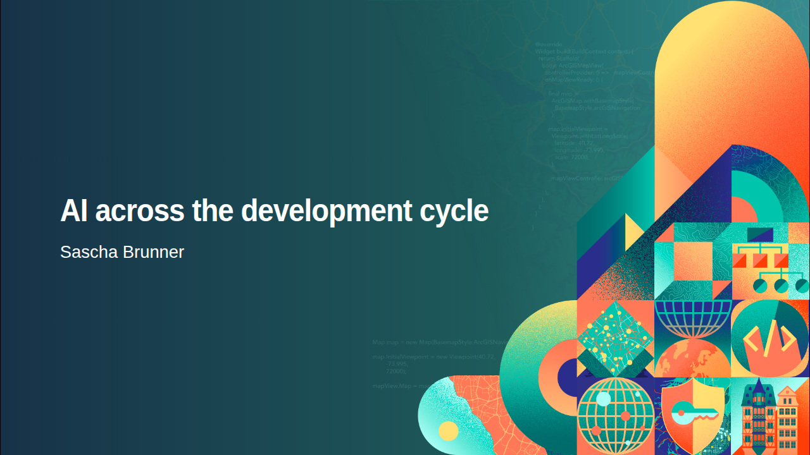
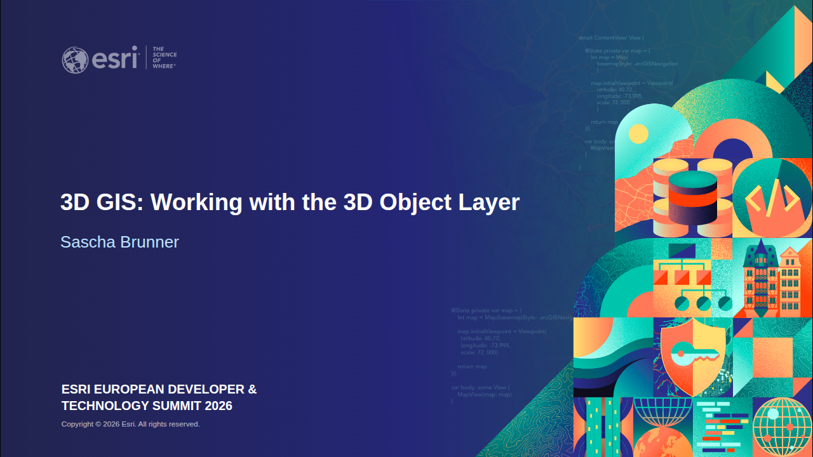
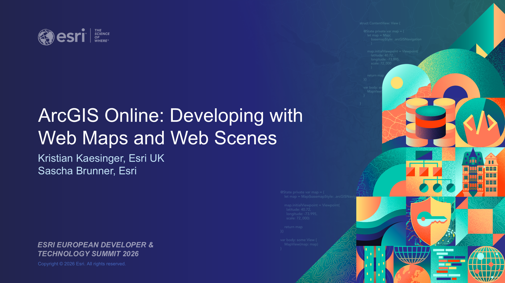

App development with components
Follow one ArcGIS app from HTML through Vite, React and TypeScript to a reusable component.
European Developer & Technology Summit · 2026
Practical sessions on building apps, working with 3D models and using AI in development. Explore the slides, code and demos.
Browse the slides, or open presenter mode for notes and the next slide.

Follow one ArcGIS app from HTML through Vite, React and TypeScript to a reusable component.

Explore lessons and patterns from Esri engineers, from planning and implementation to testing and handoffs.

Take a 3D model from upload and placement to querying, analysis and reuse in other applications.

The original session by Kristian Kaesinger and Sascha Brunner, with consecutive build slides combined into click-through pages.